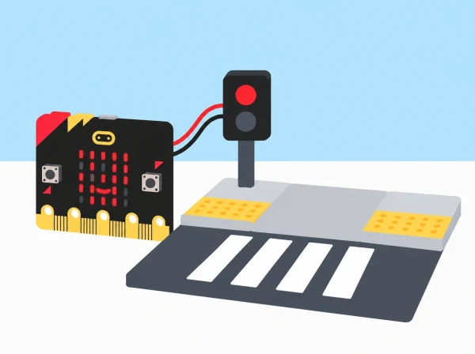

Com podem representar dos estats d’un pas urbà amb senyals comprensibles per més d’un canal i provar-los en una maqueta?
Els equips estudien un recorregut pròxim al centre a partir de fotografies autoritzades, mapes o observació des d’un lloc segur amb permís escolar. Identifiquen elements que ajuden a orientar-se i possibles barreres físiques o d’informació, sense atribuir necessitats a persones que no han participat. Després creen una maqueta de pas urbà i programen una micro:bit perquè represente dos estats acordats amb icones de la matriu LED. Si la placa i els accessoris ho permeten, afegeixen so com a canal complementari.
El projecte no instal·la un semàfor, no guia persones al carrer i no afirma resoldre necessitats de mobilitat o visió. Una micro:bit sola no és un senyal homologat, no detecta si el pas està lliure i no pot garantir que siga segur travessar. La finalitat és practicar disseny inclusiu, programació d’entrades i eixides, i avaluació de prototips a escala.
Aprenentatges: observar sense inferir experiències alienes, definir un repte, programar estats amb esdeveniments, comparar formes d’informació, construir una maqueta llegible, provar-la amb observadors voluntaris i comunicar límits d’un prototip.
Prepareu micro:bit de la dotació, portapiles o USB, MakeCode, cartró i paper per a la maqueta, pictogrames, material tàctil de manualitats, targetes de prova i full de registre. Identifiqueu si cada placa és V1 o V2 abans de programar so. La matriu 5×5 i els botons funcionen com a sortida i entrada bàsiques; la placa V2 incorpora altaveu. La V1 necessita una eixida d’àudio compatible, com un altaveu o auriculars connectats correctament als pins, i qualsevol cablejat s’ha de preparar i supervisar per una persona adulta.
Si no sabeu quina versió teniu, dissenyeu primer una resposta visual i useu targetes o un senyal oral separat per comparar canals; no carregueu blocs exclusius de V2 en una placa V1. La guia de MakeCode indica que aquests blocs poden mostrar un error 927 en hardware V1. No cal afegir accessoris per completar el nucli de l’activitat.
Vocabulari: entrada, estat, esdeveniment, pictograma, contrast, canal visual, canal sonor, prototip, accessibilitat, observació i validació. «Més d’un canal» no significa que tots els canals siguen adequats per a totes les persones; es tracta d’oferir alternatives i demanar retorn amb respecte.
Useu un mapa de l’entorn escolar o fotografies que no mostren cares, matrícules, rutes de casa ni informació identificable. Si l’escola autoritza una observació exterior, feu-la des d’un recorregut segur, amb supervisió i sense interrompre cap vianant. Registreu només elements visibles: pas, vorera, desnivell, senyal, semàfor existent o informació que es pot llegir. Separeu el fet observat de la pregunta: «hi ha una vorada» és observació; «impedeix passar a qualsevol persona amb cadira de rodes» requeriria consultar persones usuàries i context.
Formuleu preguntes que el projecte escolar puga abordar a escala, com «com indiquem en una maqueta que l’estat ha canviat?» o «com podem fer que una instrucció es veja amb més d’una representació?». No simuleu ceguesa amb els ulls tapats, no demaneu a ningú fingir una discapacitat i no assumiu que una persona puga representar un grup sencer. Evidència: mapa d’observacions i dues preguntes de disseny formulades amb llenguatge prudent. Preguntes docents: «Què hem vist directament? Quina informació necessitaríem d’una persona usuària que vulga participar?»
Construiu una maqueta de taula amb un carrer, voreres i un pas dibuixat. Les textures tàctils són recursos per representar materials i no una guia de dimensions normatives. Acordeu dos estats ficticis, per exemple «espera» i «simulació de canvi», i decidiu quina entrada els activa: botó A i botó B de la micro:bit. Eviteu utilitzar símbols que puguen confondre’s amb un semàfor real o instruccions com «creua ara». Afegiu a la maqueta una etiqueta visible: «PROTOTIP ESCOLAR — NO S’UTILITZA AL CARRER».
Feu esbossos de senyals amb més d’una forma de representació: icona LED, targeta física i, només si el model ho admet, un to breu. El so no és necessàriament accessible ni apropiat en tot entorn; el silenci o la targeta també són opcions. Evidència: especificació dels estats, esdeveniments i canals triats, amb justificació. Preguntes docents: «Quina acció canvia l’estat? Com sabrà una persona observadora que la mostra és una simulació?»
En MakeCode, associeu el botó A a una icona pròpia per a l’estat «espera» i el botó B a una altra icona per a l’estat simulat. Proveu la matriu LED al nivell de llum real de la sala i reviseu que les icones siguen diferents i simples. Si useu so, comproveu versió i eixida: altaveu integrat en V2 o accessori d’àudio compatible en V1. Manteniu-lo a volum moderat, amb opció de silenci i sense dependre’n per a distingir els estats.
Una parella llig el codi, una altra prem els botons en l’ordre de prova i una tercera anota resposta esperada/observada. Proveu també què passa després d’un reinici i si la pantalla conserva o esborra el senyal. Evidència: programa amb dos esdeveniments, taula de quatre o més proves i una revisió. Preguntes docents: «Quina entrada ha activat la resposta? Què veuria o sentiria l’observador si no coneix el codi?»
Useu cartró reutilitzat per fer el carrer i suports independents per a la placa. Manteniu micro:bit i piles fora de qualsevol zona que puga mullar-se o quedar comprimida. Col·loqueu el prototip a l’altura que permeta veure’l a observadors asseguts i dempeus, si és viable; no feu afirmacions de compliment normatiu amb una maqueta de classe. El paviment tàctil es pot mostrar amb paper rugós o peces, clarament identificat com a representació simbòlica.
Comproveu que les targetes, icones i estats no es contradiguen. Si un color forma part de l’experiment, afegiu també una forma o paraula llegible perquè la interpretació no depenga només de distingir colors. Evidència: maqueta amb etiquetatge de prototip, placa fixa i una llegenda de símbols. Preguntes docents: «Quina part és el dispositiu i quina part és una representació del carrer? Es pot entendre el model sense que un membre de l’equip l’explique?»
Convidem companys o personal del centre a observar voluntàriament el prototip i descriure què entenen; no se’ls assigna cap diagnòstic ni se’ls demana parlar en nom d’una comunitat. Si hi participa una persona amb experiència d’accessibilitat, acordem abans què vol revisar i respectem el dret a no donar consell. L’alumnat registra la interpretació dels pictogrames, la visibilitat des de dos punts i si el so resulta molest, sempre com a comentaris d’eixes persones concretes i no com a prova universal.
Reviseu un element a partir del retorn: mida de la icona, contrast, seqüència, etiqueta o canal opcional. Si apareix una preocupació de seguretat real, no s’intenta resoldre amb el prototip; es comunica al personal responsable del centre perquè utilitze els canals establits. Evidència: comentaris anònims, canvi documentat i una limitació encara oberta. Preguntes docents: «Què ha dit realment cada observador? Què no podem generalitzar a partir d’aquesta prova?»
Prepareu una exposició de maqueta, diagrama de blocs, prova d’entrades i canvis fets després del retorn. Incloeu una diapositiva o cartell amb les condicions d’ús: escala escolar, no connectat a infraestructures, no instal·lable al carrer, no certifica accessibilitat i no determina que siga segur travessar. Demostreu els estats només sobre la maqueta i amb el senyal de prototip a la vista.
Acabeu proposant què necessitaria una solució real abans de considerar-se: disseny professional, consulta de les persones afectades, revisió normativa i autorització de l’administració responsable. No cal que l’alumnat proveïsca eixos elements per acabar la SDA. Evidència: presentació, codi, registre de proves i llista de validacions que quedarien fora de l’abast escolar. Preguntes docents: «Quin problema de programació hem resolt a la maqueta? Quines decisions reals no podem prendre amb aquesta placa?»
Recolliu mapa d’observació, definició d’estats, programa, registre de proves i presentació de límits. Observeu si l’alumnat:
No s’avalua si el prototip resol necessitats d’una persona amb discapacitat ni si seria apte per a l’espai públic. S’avaluen el procés de disseny, la programació i la qualitat de la reflexió crítica.
La participació de persones usuàries és voluntària i no es grava ni se n’arrepleguen dades personals. No feu jocs de rol de discapacitat. Oferiu instruccions anticipades, icones amb bon contrast, formats tàctils de maqueta i alternatives a l’àudio. Es pot contribuir amb cartografia, programació, construcció, observació o presentació. Qualsevol recorregut exterior necessita permís del centre i supervisió; la maqueta no s’instal·la ni es prova en un pas real. La placa i els cables es mantenen fora de l’aigua i de les zones de pas.
La pantalla 5×5 i els esdeveniments dels botons són funcions programables de micro:bit. La referència MakeCode sobre micro:bit V2 especifica quins blocs són exclusius d’aquesta versió i l’error 927 en hardware V1. La guia oficial micro:bit sobre accessibilitat visual descriu opcions d’eixida de so segons versió i accessori. El repte, la maqueta, els estats, les proves i els materials són propis; abans d’usar àudio, comproveu sempre la placa disponible.